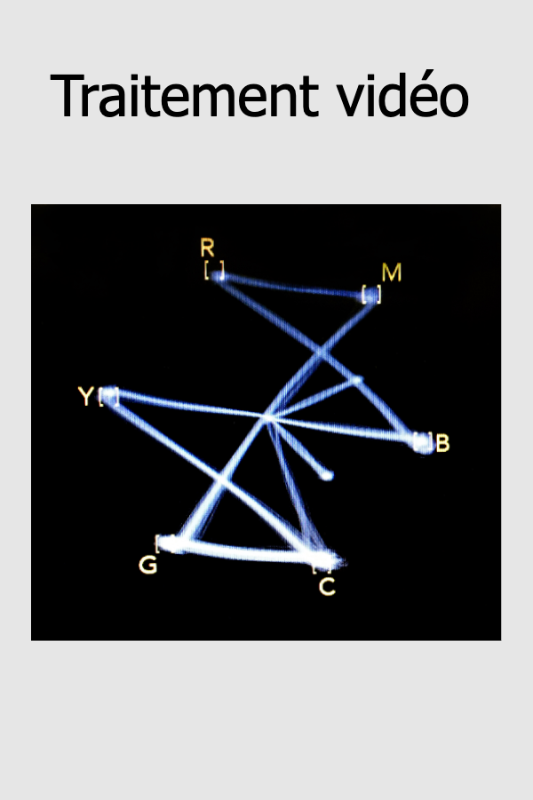

1 Traitement vidéo

1.1 Sources
- Ce document est Libre (Stallman 1983)
- Son code source est indexé via GIT (Torvalds 2006) et hébergé sur github à l’URL suivant:
- La compilation de ce document utilise
- R Markdown
- Bookdown (Xie, Allaire, and Grolemund 2018)
- knitr (Xie 2015)
- R Markdown
2 Traitement vidéo (582-543-MO)
2.1 Description du cours
- Techniques D’INTÉGRATION MULTIMÉDIA
- Département des techniques d’intégration multimédia
- 582.A1
- Pondération : 1-2-2
- Unités: 1,66
- Heures-contact : 45
- Session : 4
Ce cours permet à l’étudiante ou l’étudiant d’enregistrer, de modifier et de traiter des images en temps réel. L’étudiant sera appelé à appliquer des effets visuels aux images vidéo et à adapter les images en fonction de l’intégration.
2.2 Objectifs
2.2.1 Intégrateur et ministériel
- 015J Traiter les images en mouvement
2.2.2 Apprentissages
- Adapter l’images en mouvement (Importance relative : 40% )
- Programmer des effets visuels interactifs (Importance relative : 40% )
- Intégrer l’image en mouvement interactive à une production médiatique (Importance relative : 20% )
2.3 Développement
2.3.1 Attitudes professionnelles
- Curiosité
- Capacité de partage
- Créativité
- Sens esthétique
- Esprit critique
2.3.2 Habiletés transdisciplinaires
- Profil technologies de l’information et de la communication (TIC)
- Les étudiantes et étudiants auront à exploiter les TIC de manière efficace et responsable.
- Recherche, traitement et présentation de l’information.
2.4 Préalables
2.4.1 Préalable absolu au présent cours :
- 582 413 MO Montage vidéo
2.4.2 Préalable absolu aux cours suivants :
- 582 513 MO Conception de projet multimédia
- 582 66B MO Expérience multimédia interactive
- 582 66G MO Production Web en entreprise
2.5 Contexte particulier d’apprentissage
- En laboratoire et studio.
2.5.1 Fiche technique
- Ordinateurs, projecteurs à haute luminosité ou télévision, haut-parleurs professionnels, casque audio, et tout le matériel disponible pour TIM
- Logiciels de montage vidéo et traitemet vidéo en temps réel
- Languages et protocoles
Technicienne ou technicien en travaux pratiques
2.6 Contenus essentiels
2.6.1 Survol historique
2.6.2 Fondements technique
- Formats de fichiers
- Encodage des vidéos
- Captation vidéo en temps réel
- Logiciels de traitement vidéo en temps réel et d’interactivité
- Logiciels de programmation nodale
- Notions de traitement vidéo
- pixels
- couleurs
- texture
- matrice
- mémoire tampon
- alpha channel
- rendu OpenGL
2.6.3 Traitement de l’images en mouvement
- Usage de capture vidéo en temps réel
- Effets visuels et filtres applicables en temps réel sur des matériaux visuels
- Traitement visuel en temps réel à l’aide d’effets et de logiciels de programmation multimédia et nodale
- Flot de données entre les objets du logiciel
- Exploitation des fonctions des logiciels de traitement vidéo en temps réel
- Utilisation de nuanceurs (shaders)
2.6.4 Programmation d’effets visuels
- Programmation de compositions visuelles génératives
- Réalisation d’un échantillonneur/mixeur visuel
- Programmation pour contrôler la lecture vidéo,
- montage temps réel
- niveau des couleurs
- alpha channel
- Programmation nodale pour créer des effets en temps réel
- position
- rotation
- dimensions
- mixage d’images
- incrustation
- distorsion
- délais
- rétroaction (feedback)
- modification de couleurs
- chromakey
- lumière
- fumée
- texture
- Nuanceurs (shaders) : vertex, pixel et géométrie
2.6.5 Image en mouvement et interactivité
- Intégration des composantes dans une production interactive
- Configuration logicielle et matérielle d’une production interactive
- Conceptualisation et scénarisation d’un projet visuel interactif
- Captation de mouvement et de présence
- Programmation de la captation de mouvement et de présence
- Utilisation d’interfaces de contrôle interactives
- Utilisation d’OSC, MIDI, DMX ou ArtNet pour interagir avec d’autre logiciels et interfaces de contrôle
- Ajustement des effets visuels en fonction des tests
2.6.6 Gestion de projets
- Schématisation
- Prototypage
- Gestion de banques d’images
- Optimisation des performances de l’application
- Test de contrôle de qualité
- Préréglages
- Optimisation de la programmation et commentaires
- Console de débogage
- Exportation de projets
- Formats de sauvegarde
- Application autonome
- Sauvegarde et archivage des médias
3 Historique du traitement vidéo
3.1 Évolution historique du traitement vidéo dans les différentes formes d’art
3.1.1 Performance
3.1.2 Installation
3.1.3 Évolution des technologies associées
3.2 Langages et moyens expressifs de l’image en mouvement
* Programmation nodale
* Javascript
* Open sound control (OSC)
* Réseautique (addressage ip)
* Midi
* NDI
* Websocket4 Lexique technique et technologique
4.1 Composantes du signal vidéo
4.1.1 Signaux de transmission
4.1.2 résolutions
{kind=link}
4.1.3 Ratio
4.1.4 Débit
4.1.5 Échantillonnage
- Profondeur de l’échantillonnage couleur
- chroma subsampling
{kind=link}
4.1.6 Cadence
4.1.7 Trame
4.1.8 Poid
4.2 Formats de fichiers
4.2.1 Containers
| nom | extension |
|---|---|
| QuickTime | .mov |
| Matroska | .mkv |
| Mpeg4 | .mp4 |
| Windows Media Video | .wmv |
| Audio Video Interleaved | .avi |
| Theora | .ogv |
4.2.2 Codecs
| Codec | compression | usage |
|---|---|---|
| H.264&VP8 | intra & inter | lecture<1080p |
| HEVC&VP9 | intra & inter | lecture<4k |
| proRes | intra | montage |
| dnxHD | intra | montage |
| HAP | intra | GPU&SSD |
4.3 Encodage vidéo
4.3.1 compression
4.3.1.1 lossless/lossy
4.3.1.1.1 Encodage vidéo sans perte - lossless
- Apple Animation (QuickTime RLE)
- CinemaDNG Raw (Adobe, Blackmagic)
- séquence d’images (tiff, openexr)
4.3.1.1.2 Encodage vidéo avec perte -lossy
- H.264&VP8
- HEVC&VP9
- proRes, dnxHD, cineform
- HAP & HAPQ
4.3.1.2 intra/inter frame
4.3.1.2.1 intraframe
- Toute l’image individuellement compressée dans chaque image.
- prores, dnxHD, photoJpeg, Apple intermediate codec (aic), cineform
4.3.1.2.2 interframe
- image temporellement compressée, ce qui change
- usage créatif 1, 2, 3
{kind=link}
4.3.2 utilisation de FFmpeg
4.3.2.1 ex: Transcoder un fichier video vers un fichier prores compatible avec quicktime
ffmpeg -i INPUT.mkv -c:v prores_ks -profile:v 3 -c:a pcm_s16le -pix_fmt yuv420p OUTPUT.movOù -profile est un chiffre entire de -1 to 5 correspondant au profile prores suivant :
- -1: auto (default)
- 0: proxy ≈ 45Mbps YUV 4:2:2
- 1: lt ≈ 102Mbps YUV 4:2:2
- 2: standard ≈ 147Mbps YUV 4:2:2
- 3: hq ≈ 220Mbps YUV 4:2:2
- 4: 4444≈ 330Mbps YUVA 4:4:4:4
- 5: 4444xq ≈ 500Mbps YUVA 4:4:4:4
Où -pix_fmt yuv420p permet de créer un fichier compatible avec Quicktime
pour des usages réguliers voir :
- FFmpeg Cookbook for Archivists (Kromer 2020)
- FFmpeg Cookbook par Greg Wessels (Wessels 2017)
pour des usages artistiques :
- FFmpeg artschool (Association of Moving Image Archivists 2020)
4.4 Captation vidéo en temps réel
4.5 Logiciels de programmation nodale
4.6 Notions de traitement vidéo
4.6.1 Pixels
4.6.2 Couleurs
4.6.3 Texture
4.6.4 Matrice
4.6.5 Mémoire tampon
4.6.6 Alpha channel
4.6.7 Rendu OpenGL
5 Traiter l’image en mouvement
5.1 Logiciels de traitement vidéo en temps réel et d’interactivité
- Open Broadcast Studio
- Unity
- Pure Data
- Resolve
- Reaper
- ffmpeg
- Open stage control
5.2 Aquérir l’image en mouvement
5.3 Usage de capture vidéo en temps réel
5.4 Effets visuels et filtres applicables en temps réel sur des matériaux visuels
5.5 Traitement visuel en temps réel à l’aide d’effets et de logiciels de programmation multimédia et nodale
5.6 Flot de données entre les objets du logiciel
5.7 Exploitation des fonctions des logiciels de traitement vidéo en temps réel
5.8 Utilisation de nuanciers (shaders)
6 Programmer des effets visuels
6.1 Programmation de compositions visuelles génératives
6.2 Réalisation d’un échantillonneur/mélangeur visuel
6.3 Programmation pour contrôler la lecture vidéo,
6.3.1 montage temps réel
6.3.2 niveau des couleurs
6.3.3 alpha channel
6.4 Programmation nodale pour créer des effets en temps réel
6.4.1 position
6.4.2 rotation
6.4.3 dimensions
6.4.4 mixage d’images
6.4.5 incrustation
6.4.6 distorsion
6.4.7 délais
6.4.8 rétroaction (feedback)
6.4.9 modification de couleurs
6.4.10 chromakey
6.4.11 lumière
6.4.12 fumée
6.4.13 texture
6.5 Nuanceurs (shaders) : vertex, pixel et géométrie
7 Interactivité et images en mouvement
7.1 Intégration des composantes dans une production interactive
7.2 Configuration logicielle et matérielle d’une production interactive
7.3 Conceptualisation et scénarisation d’un projet visuel interactif
7.4 Captation de mouvement et de présence
7.5 Programmation de la captation de mouvement et de présence
7.6 Utilisation d’interfaces de contrôle interactives
7.7 Utilisation d’OSC, MIDI, DMX ou ArtNet pour interagir avec d’autres logiciels et interfaces de contrôle
7.8 Ajustement des effets visuels en fonction des tests
8 Déploiement de projet vidéo interactif
8.1 Schématisation
8.2 Prototypage
8.3 Optimisation des performances de l’application
8.4 Gestion de banques d’images
8.5 Formats de sauvegarde
8.6 Exportation de projets
8.7 Sauvegarde et archivage des médias
8.8 Préréglages
8.9 Optimisation de la programmation et commentaires
8.10 Application autonome
8.11 Console de débogage
8.12 Test de contrôle de qualité
9 Évaluations sommatives
9.1 Corpus vidéo
9.1.1 15% individuel
9.1.2 Présentation orale individuelle ~5 minutes
- Traiter une oeuvre et/ou une technique en lien avec le traitement vidéo
- Partager un extrait court et des capture écran si approprié
- Présenter son contexte historique et technologique
- Sugérer une technique actuelle pour reproduire le résultat visuel
- Tenter de lier des contenus essentiels à la présentation
9.2 Question quiz
9.2.1 10% individuel
9.2.2 Rédaction d’une question pertinant et originale pour le quiz
- Rédiger Une question théorique originale portant sur la matière du cours
- Se référer aux contenus essentiels
- 4 choix de réponses éloquents comprenant une réponse
9.3 Quiz théorique
9.3.1 15% individuel
- formulaire en ligne à répondre individuellement à livre ouvert
- Contient les questions quiz des deux groupes ainsi ceux de l’enseignement
9.4 Moodboard vidéo
9.4.1 15% individuel
9.4.2 Partage d’écran individuelle ~5 minutes
- Création sources
- Conceptualisation
9.5 Déclenchement vidéo temps réel
9.5.1 25% individuel
9.5.2 Flux(Stream) video où le traitement vidéo est effectué en temps réel
- Présentation de type partage d’écran et stream simultané
- Changement de scène
- Changement de paramètres
- Pourrait prendre la forme d’un VJ set via scènes dans OBS
9.6 Installation interactive et/ou performance audiovisuel
9.6.1 30% individuel ou équipe
9.6.2 Présentation, démonstration et documentation des apprentissages
10 Calendrier
Calendrier Collège Montmorency 2020-2021
| SÉANCE | CONTENU ABORDÉ EN CLASSE ET OBJECTIF | ACTIVITÉS AUTONOME |
|---|---|---|
| 1; 3 février | Survol du plan de cours evolution du traitement vidéo |
1 aa |
| 2; 10 février | Suite : evolution du traitement vidéo composantes du signal vidéo |
Préparation evaluation 1 |
| 3; 17 février | Formatif:Approbation des sujet evaluation 1 | Préparation evaluation 1 |
| 4; 24 février | Remise évaluation_1 | Préparation evaluation 2 |
| X ; 3 mars | Journées de rattrapage (Pas de cours) | Préparation evaluation 2 |
| 5; 10 mars | Remise évaluation_2 | |
| 6; 17 mars | Compléter évaluation_3 | |
| 7; 24 mars | 8e | 8 aa |
| 8; 31 mars | Remise évaluation_4 | 9 aa |
| X; 7 avril | Congé (Pas de cours) | 10 aa |
| 9; 14 avril | 11e | Préparation évaluation_5 |
| 10; 21 avril | Remise évaluation_5 | 12 aa |
| 11; 28 avril | 13e | 13 aa |
| 12; 5 mai | 14e | 14 aa |
| 13; 12 mai | Préparation évaluation_6 | Préparation évaluation_6 |
| X; 19 mai | épreuve uniforme de français (Pas de cours) | |
| 14; 25 mai | Remise évaluation_6 |
11 Examples HTML
References
Association of Moving Image Archivists. 2020. “FFmpeg Artschool:” Ffmpeg-Artschool. https://amiaopensource.github.io/ffmpeg-artschool/.
Kromer, Reto. 2020. “FFmpeg Cookbook for Archivists.” FFmpeg Cookbook for Archivists. https://avpres.net/FFmpeg/.
Stallman, Richard. 1983. “Gnu.org.” https://www.gnu.org/gnu/manifesto.en.html.
Torvalds, Linus. 2006. “Git.” https://git-scm.com/.
Wessels, Greg. 2017. “FFmpeg Cookbook.” http://www.gregwessels.com/dev/2017/04/25/ffmpeg-cookbook.html.
Xie, Yihui. 2015. Dynamic Documents with R and Knitr. 2nd ed. Boca Raton, Florida: Chapman; Hall/CRC. http://yihui.name/knitr/.
Xie, Yihui, J. J. Allaire, and Garrett Grolemund. 2018. R Markdown: The Definitive Guide. Boca Raton, Florida: Chapman; Hall/CRC. https://bookdown.org/yihui/rmarkdown.